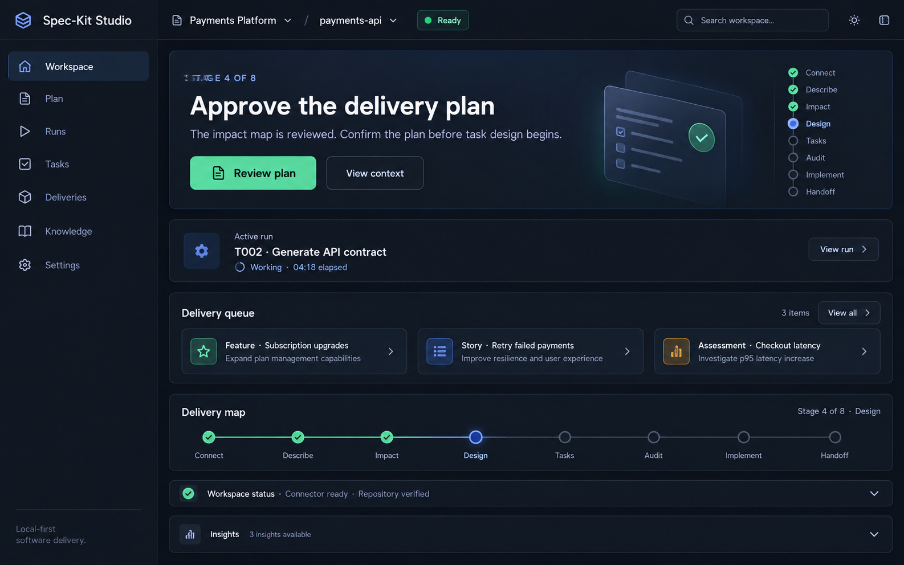

Starting point A
Feature
For a larger capability containing related stories, requirements, tasks, and reviewed artifacts.
Feature journeyLocal-first specification workspace
A reviewable path from an incomplete request to a bounded implementation and durable delivery handoff.

Agent-assisted work loses trust when requirements, plans, code changes, and verification evidence live in separate places. Studio keeps those decisions connected without claiming that generated output is approved or correct.
Bind a repository and inspect its Git, stack, and baseline evidence.
Start with a feature or one independently deliverable user story.
Review specifications, decisions, dependencies, and ordered tasks.
Run approved tasks inside an isolated, registered worktree.
Retain declared checks, changed files, output, and recovery context.
Export engine artifacts or delivery evidence; optionally record an explicitly created PR after commit and push.
Meet work where it starts
Starting point A
For a larger capability containing related stories, requirements, tasks, and reviewed artifacts.
Feature journeyStarting point B
For one independently deliverable outcome with only its selected requirements and evidence.
Story deliveryDesigned boundaries
The loopback connector confines paths to configured roots, listens on localhost, and requires confirmation for writes, worktrees, checks, tool installation, agent execution, and optional PR publication.
Security and trust modelProject state and review flow remain visible to the operator.
Repository access is local, allowlisted, and independently restartable.
Implementation is isolated from the connected checkout.
Generation remains disabled until an operator supplies configuration.
Go deeper
Direct answers
Spec-Kit Studio is an open-source, local-first workspace that connects reviewed requirements, GitHub Spec-Kit artifacts, coding-agent execution, verification evidence, and delivery handoff.
Local repository inspection and execution use an optional loopback connector restricted to configured roots. Cloud AI is optional and disabled until an operator configures it.
Studio can prepare portable task prompts for Codex, Claude, GitHub Copilot CLI, Gemini, and Cursor. It can launch detected local agents through the connector only after explicit confirmation.
At completed developer delivery, a developer may explicitly create a GitHub pull request through the existing local GitHub CLI sign-in. The branch must already be clean, committed, and pushed. Studio records the PR in delivery evidence; it does not commit, push, merge, or deploy.
Studio supports Windows, macOS, and Linux with Node.js 22.12 or later within Node 22.
Inspectable by design
Run Spec-Kit Studio locally and take one bounded change through the complete review path.